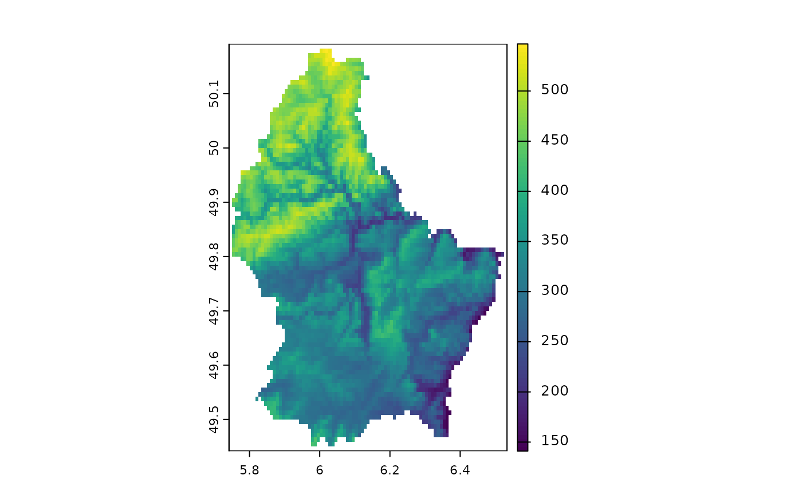
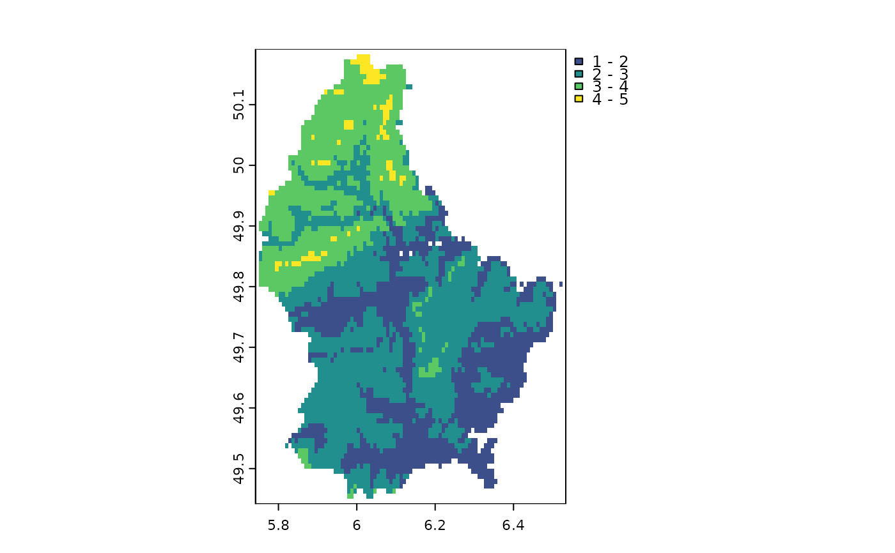
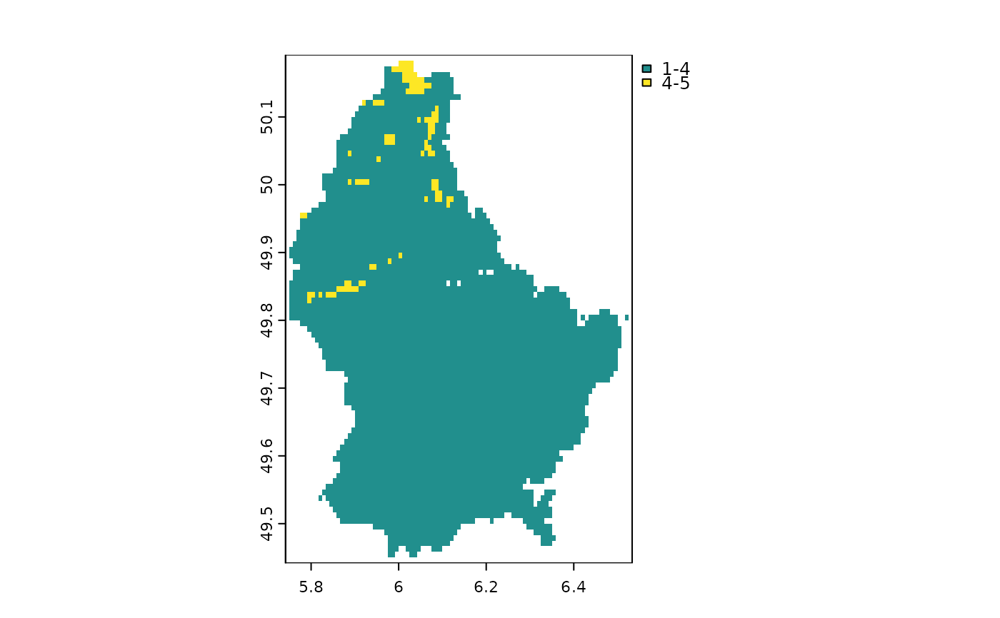
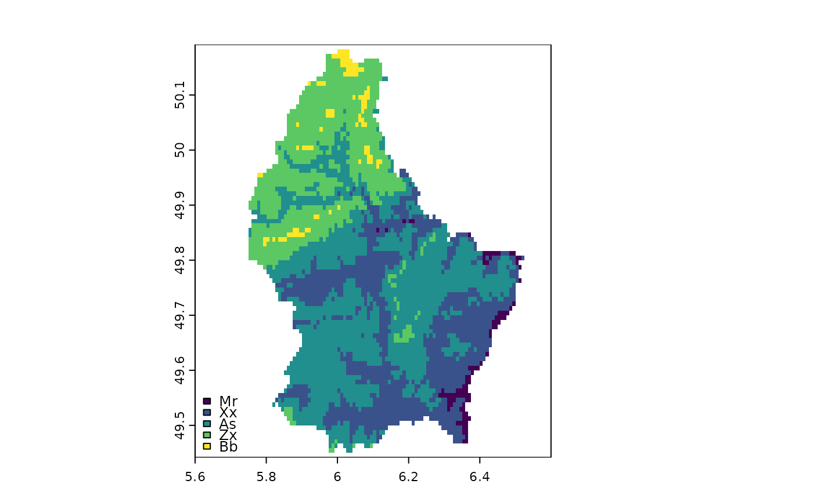
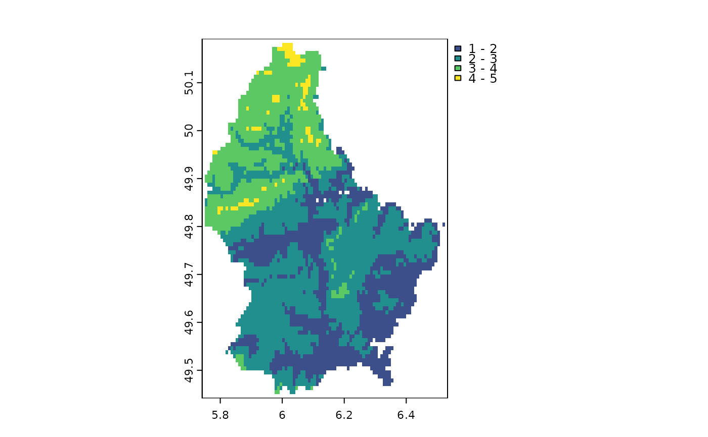
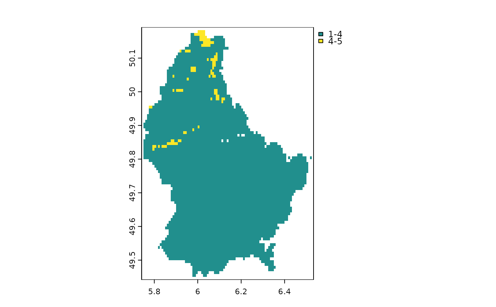
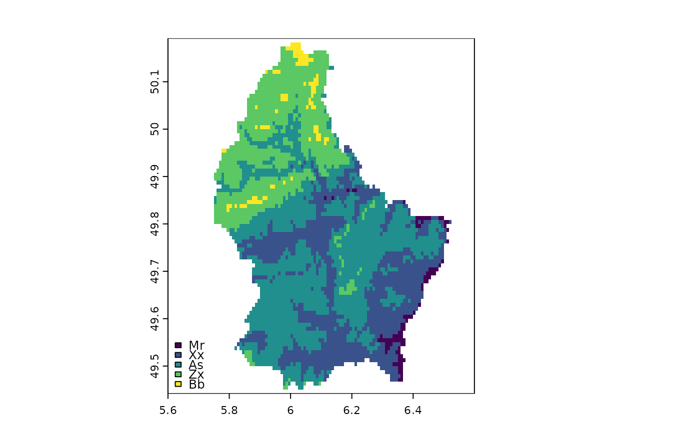

Make a map
plot.RdPlot the values of a SpatRaster or SpatVector to make a map. See lines to add a SpatVector to an existing map.
# S4 method for SpatRaster,numeric
plot(x, y=1, col, type, mar=NULL, legend=TRUE, axes=TRUE, plg=list(),
pax=list(), maxcell=500000, smooth=FALSE, range=NULL, levels=NULL,
fun=NULL, colNA=NULL, alpha=NULL, sort=FALSE, grid=FALSE, ext=NULL, reset=FALSE, ...)
# S4 method for SpatRaster,missing
plot(x, y, maxcell=500000, main, mar=NULL, nc, nr, maxnl=16, ...)
# S4 method for SpatRaster,character
plot(x, y, ...)
# S4 method for SpatVector,character
plot(x, y, col, type, mar=NULL, legend=TRUE, add=FALSE, axes=!add,
main=y, buffer=TRUE, background=NULL, grid=FALSE, ext=NULL,
plg=list(), pax=list(), nr, nc, ...)
# S4 method for SpatVector,numeric
plot(x, y, ...)
# S4 method for SpatVector,missing
plot(x, y, ...)
# S4 method for SpatExtent,missing
plot(x, y, ...)Arguments
- x
SpatRaster or SpatVector
- y
missing or positive integer or name indicating the layer(s) to be plotted
- col
character. Colors. The default is
rev(grDevices::terrain.colors(50))- type
character. Type of map/legend. One of "continuous", "classes", or "interval"
- mar
numeric vector of lenght 4 to set the margins of the plot (to make space for the legend). The default is (3.1, 3.1, 2.1, 7.1) for a single plot with a legend and (3.1, 3.1, 2.1, 2.1) otherwise. Use
mar=NAto not set the margins- legend
logical or character. If not
FALSEa legend is drawn. The character value can be used to indicate where the legend is to be draw. For example "topright" or "bottomleft". Useplgfor more refined placement (SpatVector data only)- axes
logical. Draw axes?
- buffer
logical. If
TRUEthe plotting area is slightly larger than the extent ofx- background
background color. Default is no color (white)
- plg
list with parameters for drawing the legend. See the arguments for
legend- pax
list with parameters for drawing axes. See the arguments for
axis- maxcell
positive integer. Maximum number of cells to use for the plot
- smooth
logical. If
TRUEthe cell values are smoothed (for continuous legend)- range
numeric. minimum and maximum values to be used for the continuous legend
- levels
character. labels to be used for the classes legend
- fun
function to be called after plotting each SpatRaster layer to add something to each map (such as text, legend, lines). For example, with SpatVector
v, you could dofun=function() lines(v). The function may have one argument, representing the the layer that is plotted (1 to the number of layers)- colNA
character. color for the NA values
- alpha
Either a single numeric between 0 and 1 to set the transparency for all colors (0 is transparent, 1 is opaque) or a SpatRaster with values between 0 and 1 to set the transparency by cell. To set the transparency for a given color, set it to the colors directly
- sort
logical. If
TRUElegends with categorical values are sorted- grid
logical. If
TRUEgrid lines are drawn. Their properties such as type and color can be set with thepaxargument- nc
positive integer. Optional. The number of columns to divide the plotting device in (when plotting multiple layers)
- nr
positive integer. Optional. The number of rows to divide the plotting device in (when plotting multiple layers)
- main
character. Main plot titles (one for each layer to be plotted)
- maxnl
positive integer. Maximum number of layers to plot (for a multi-layer object)
- add
logical. If
TRUEadd the object to the current plot- ext
SpatExtent. Can be use instead of xlim and ylim to set the extent of the plot
- reset
logical. If
TRUEadd the margins (see argumentmar) are reset to what they were before calling plot; doing so may affect the display of additional objects that are added to the map (e.g. withlines- ...
arguments passed to
plot("SpatRaster", "numeric")and additional graphical arguments
Examples
## raster
f <- system.file("ex/elev.tif", package="terra")
r <- rast(f)
plot(r)

plot(r, type="interval")
 e <- c(6.3, 6.35, 49.9, 50.1)
plot(r, plg=list(ext=e, title="Title\n", title.cex=1.25), pax=list(sides=1:2))
e <- c(6.3, 6.35, 49.9, 50.1)
plot(r, plg=list(ext=e, title="Title\n", title.cex=1.25), pax=list(sides=1:2))
 d <- classify(r, c(100,200,300,400,500,600))
plot(d, type="classes")
d <- classify(r, c(100,200,300,400,500,600))
plot(d, type="classes")
 plot(d, type="interval", breaks=1:5)

plot(d, type="interval", breaks=c(1,4,5), plg=list(legend=c("1-4", "4-5")))

plot(d, type="classes", plg=list(legend=c("Mr", "Xx", "As", "Zx", "Bb"), x="bottomright"))

x <- trunc(r/200)
levels(x) <- c("earth", "wind", "fire")
plot(x, plg=list(x="topright"),mar=c(2,2,2,2))
plot(d, type="interval", breaks=1:5)

plot(d, type="interval", breaks=c(1,4,5), plg=list(legend=c("1-4", "4-5")))

plot(d, type="classes", plg=list(legend=c("Mr", "Xx", "As", "Zx", "Bb"), x="bottomright"))

x <- trunc(r/200)
levels(x) <- c("earth", "wind", "fire")
plot(x, plg=list(x="topright"),mar=c(2,2,2,2))
 # two plots with the same legend
dev.new(width=6, height=4, noRStudioGD = TRUE)
par(mfrow=c(1,2))
plot(r, range=c(50,600))
plot(r/2, range=c(50,600))
# as you only need one legend:
par(mfrow=c(1,2))
plot(r, range=c(50,600), mar=c(4, 3, 4, 3), plg=list(shrink=0.9, cex=.8),
pax=list(sides=1:2, cex.axis=.6))
#text(182500, 335000, "Two maps, one plot", xpd=NA)
plot(r/2, range=c(50,600), mar=c(4, 2, 4, 4), legend=FALSE,
pax=list(sides=c(1,4), cex.axis=.6))
## multi-layer with RGB
s <- rast(system.file("ex/logo.tif", package="terra"))
s
#> class : SpatRaster
#> dimensions : 77, 101, 3 (nrow, ncol, nlyr)
#> resolution : 1, 1 (x, y)
#> extent : 0, 101, 0, 77 (xmin, xmax, ymin, ymax)
#> coord. ref. : +proj=merc +lon_0=0 +k=1 +x_0=0 +y_0=0 +datum=WGS84 +units=m +no_defs
#> source : logo.tif
#> colors RGB : 1, 2, 3
#> names : red, green, blue
#> min values : 0, 0, 0
#> max values : 255, 255, 255
plot(s)
# remove RGB
plot(s*1)
# or use layers
plot(s, 1)
plot(s, 1:3)
## vector
f <- system.file("ex/lux.shp", package="terra")
v <- vect(f)
plot(v)
plot(v, 2, pax=list(sides=1:2), plg=list(x=6.2, y=50.2, cex=1.2))
plot(v, 4, pax=list(sides=1:2), plg=list(x=6.2, y=50.2, ncol=2), main="")
plot(v, 1, plg=list(x=5.9, y=49.37, horiz=TRUE, cex=1.1), main="", mar=c(5,2,0.5,0.5))
plot(v, density=1:12, angle=seq(18, 360, 20), col=rainbow(12))
plot(v, "NAME_2", col=rainbow(12), border=c("gray", "blue"), lwd=3, type="classes")
plot(v, "AREA", type="interval", breaks=3, mar=c(3.1, 3.1, 2.1, 3.1),
plg=list(x="topright"), main="")
plot(v, "AREA", type="interval", breaks=c(0,200,250,350), mar=c(2,2,2,2),
plg=list(legend=c("<200", "200-250", ">250"), cex=1,
bty="o", x=6.4, y=50.125, box.lwd=2, bg="light yellow", title="My Legend"))
# two plots with the same legend
dev.new(width=6, height=4, noRStudioGD = TRUE)
par(mfrow=c(1,2))
plot(r, range=c(50,600))
plot(r/2, range=c(50,600))
# as you only need one legend:
par(mfrow=c(1,2))
plot(r, range=c(50,600), mar=c(4, 3, 4, 3), plg=list(shrink=0.9, cex=.8),
pax=list(sides=1:2, cex.axis=.6))
#text(182500, 335000, "Two maps, one plot", xpd=NA)
plot(r/2, range=c(50,600), mar=c(4, 2, 4, 4), legend=FALSE,
pax=list(sides=c(1,4), cex.axis=.6))
## multi-layer with RGB
s <- rast(system.file("ex/logo.tif", package="terra"))
s
#> class : SpatRaster
#> dimensions : 77, 101, 3 (nrow, ncol, nlyr)
#> resolution : 1, 1 (x, y)
#> extent : 0, 101, 0, 77 (xmin, xmax, ymin, ymax)
#> coord. ref. : +proj=merc +lon_0=0 +k=1 +x_0=0 +y_0=0 +datum=WGS84 +units=m +no_defs
#> source : logo.tif
#> colors RGB : 1, 2, 3
#> names : red, green, blue
#> min values : 0, 0, 0
#> max values : 255, 255, 255
plot(s)
# remove RGB
plot(s*1)
# or use layers
plot(s, 1)
plot(s, 1:3)
## vector
f <- system.file("ex/lux.shp", package="terra")
v <- vect(f)
plot(v)
plot(v, 2, pax=list(sides=1:2), plg=list(x=6.2, y=50.2, cex=1.2))
plot(v, 4, pax=list(sides=1:2), plg=list(x=6.2, y=50.2, ncol=2), main="")
plot(v, 1, plg=list(x=5.9, y=49.37, horiz=TRUE, cex=1.1), main="", mar=c(5,2,0.5,0.5))
plot(v, density=1:12, angle=seq(18, 360, 20), col=rainbow(12))
plot(v, "NAME_2", col=rainbow(12), border=c("gray", "blue"), lwd=3, type="classes")
plot(v, "AREA", type="interval", breaks=3, mar=c(3.1, 3.1, 2.1, 3.1),
plg=list(x="topright"), main="")
plot(v, "AREA", type="interval", breaks=c(0,200,250,350), mar=c(2,2,2,2),
plg=list(legend=c("<200", "200-250", ">250"), cex=1,
bty="o", x=6.4, y=50.125, box.lwd=2, bg="light yellow", title="My Legend"))